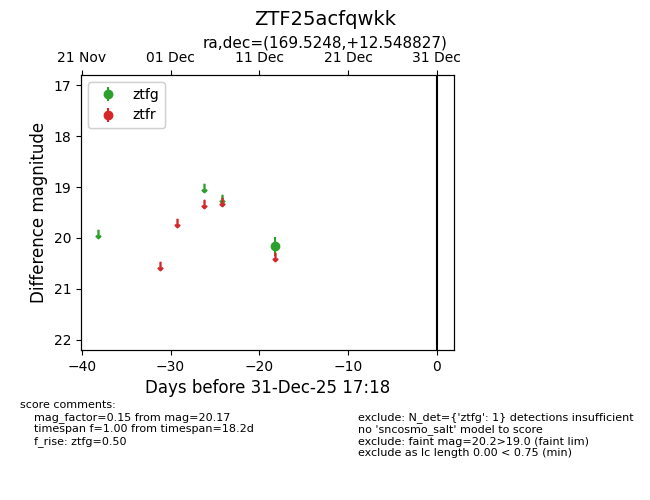
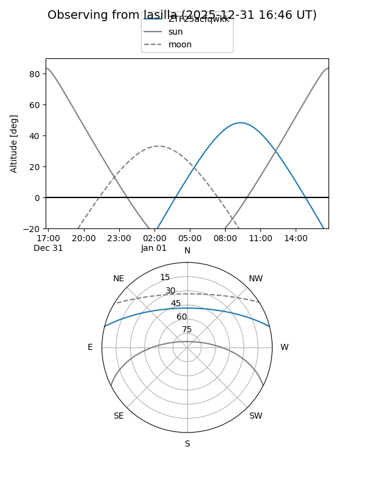
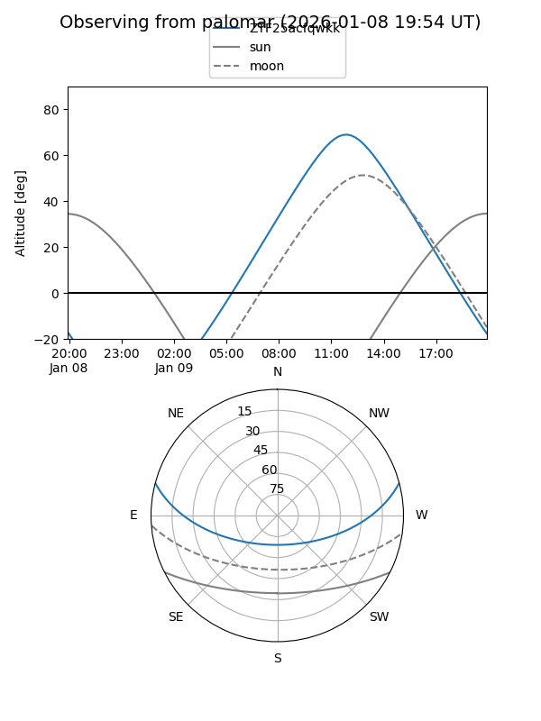

ZTF25acfqwkk
Target ZTF25acfqwkk at 2026-01-09 12:49
Aliases and brokers:
FINK: link
Lasair: link
ALeRCE: link
alt names
ZTF25acfqwkk (ztf,fink_ztf)
Coordinates:
equatorial (ra, dec) = 169.5248,+12.54883
equatorial (HMS+DMS) = 11:18:05.96,+12:32:55.78
galactic (l, b) = (242.0451,+63.73329)
Flags:
Photometry:
last ztfg=20.17
1 ztfg detections
Lightcurve

Visibility


Additional plots